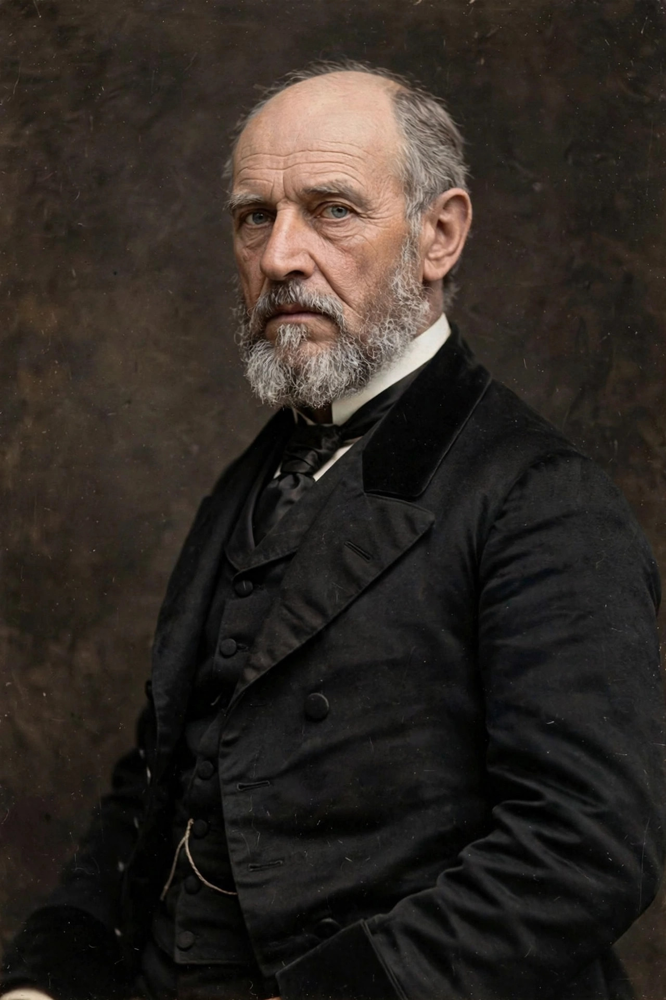

Charles Cunningham Boycott (12 March 1832 – 19 June 1897) was an English land agent employed by Lord Erne in County Mayo, Ireland. His ostracism by the local community during the Land War of 1880 gave the English language the verb to boycott.

Boycott had served in the British Army before settling in Ireland as agent for estates around Lough Mask. In 1880, after a poor harvest, Lord Erne offered tenants a 10 per cent rent reduction; the tenants, following the Irish National Land League's demands, sought 25 per cent. Boycott began eviction proceedings against some tenants.
The Land League responded with a campaign of social and economic ostracism: labourers refused to work for him, shops refused to serve him, and his post was not delivered. The harvest was eventually brought in by volunteers from Ulster protected by a large military escort, at a cost far exceeding the crop's value. The episode was widely reported, and American journalist James Redpath popularised "boycott" as a term for the tactic.
Boycott left Ireland in December 1880. He later returned for visits but lived mainly in England, dying in Suffolk in 1897.